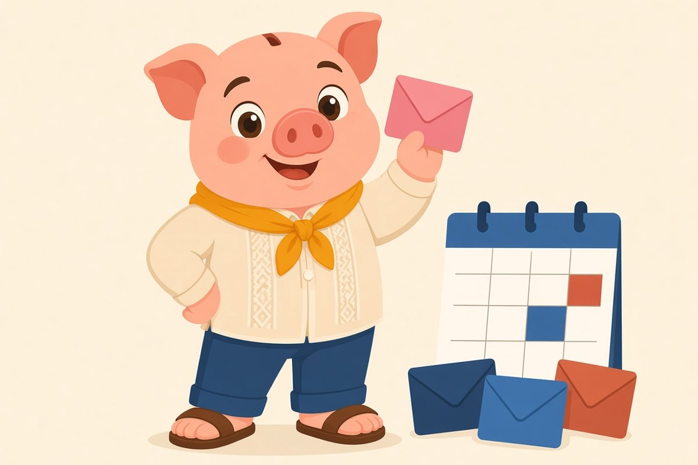
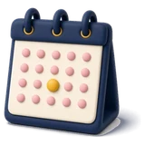
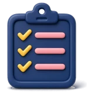

Day 10 and broke
Sahod noong 30, wala na pagdating ng 10.
Home / Guides / Saving and budgeting
Budgeting, free lesson
Kinsenas at katapusan lang masaya? Hindi dapat ganyan.
Petsa de peligro, those tight days before payday, is mostly a timing problem. These tips focus on the timing, not on cutting your joy to zero.
Piso Wais, published

Sound familiar?
Sahod noong 30, wala na pagdating ng 10.
Ang huling linggo ay noodles at de-lata.
Laging may hinihiraman bago sumweldo.
Lesson 1 Free
Instead of spending freely after sahod, divide your spending money into weekly envelopes or separate e-wallet pockets. You give yourself an allowance every Monday. When this week's envelope is empty, you wait for Monday.
Example only. Paolo takes home ₱14,000 every kinsenas. After bills and savings, ₱5,000 is for daily spending. He moves ₱2,500 to a "Week 1" pocket and ₱2,500 to "Week 2".
Lesson 2 Free

Pay bills on payday, not on due dateThe money for bills disappears if it sits in your main account. Pay or set aside bill money the day you get paid.
Lesson 3 Free

Plan meals for the last week firstBuy rice, eggs, canned goods and vegetables for the tight week right after payday. Then the last week is already covered.
Lesson 4 Free
 Watch the "maliit lang" leaks
Watch the "maliit lang" leaksCheck one week of e-wallet and bank history. Count delivery fees, small online orders and convenience store runs. Pick one to reduce, not all.
Lesson 5 Free
Your goal: one extra week of spending money sitting in savings. Once you have it, petsa de peligro becomes "petsa ng konting ingat" instead.
Lesson 6 Free
 Make a "no-spend" list for the tight week
Make a "no-spend" list for the tight weekWrite three or four free things you enjoy: a walk in the park, a movie night at home with downloaded shows, cooking with friends, a basketball game in the barangay court. When boredom hits during the tight week, you already have a list that does not cost money.
The point is not to suffer. It is to swap paid habits for free ones on the days money is thin.
Lesson 7 Free
If you share a house, the whole house feels petsa de peligro. Agree on a simple rule, like bigger grocery runs right after payday and a shared list of what is already stocked. One honest talk can save many small arguments later.
Example only. The Santos family in Laguna keeps a whiteboard on the ref: rice, eggs, sardinas, oil, sabon. Whoever uses the last one writes it down, so the payday grocery run covers everything at once.
Lesson 8 Free
 Track for one cycle
Track for one cycleFor one pay cycle, write every expense in your notes app. At the end, mark each line as need, want or leak. You will usually find one or two patterns, like daily coffee or late-night delivery, that explain most of the shortfall.
Quick quiz, 3 minutes
One question per screen, no sign-up, answers stay on your phone.
Take the quizYour next step
Credit card rules, idle money ladder, 30-day cash flow plan.
Get the free cheat sheetPlanned worksheets and templates. Not available yet, nothing to buy.
A guided check of where your money leaks. Coming later.
Only if you can pay the full statement from the next payday. Otherwise it moves the problem to next month with interest.
They can help in emergencies, but repeated salary loans for daily needs usually mean the budget needs fixing.
Use your lowest typical month as your planning number, and save extra in good months.
Educational only, not financial advice. Rates and rules change, check the official source.